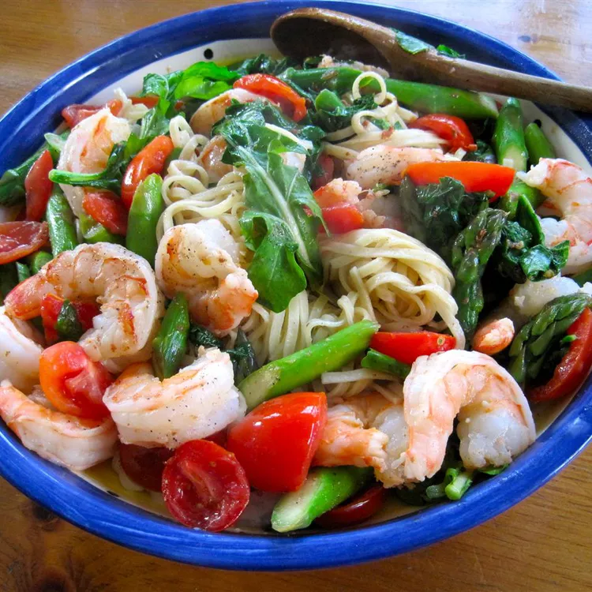

Creamy Shrimp Pasta Primavera

Description
This is a fun recipe that me and my family developed ourselves. It is really flexible and you can swap out ingredients and change measurements to your liking.
Creamy Shrimp Pasta Primavera is a delightful Italian-inspired dish that combines succulent shrimp with vibrant seasonal vegetables and a rich, creamy sauce, all served over a bed of tender pasta. The word "primavera" means "spring" in Italian, so this dish typically features an array of fresh spring vegetables such as bell peppers, broccoli, peas, and cherry tomatoes.
Ingredients
- spaghetti
- olive oil
- chopped onions
- clove garlic
- sliced fresh mushrooms
- chopped red bell pepper
- uncooked medium shrimp, peeled and deveined
Steps
- Bring a large pot of lightly salted water to a boil. Cook spaghetti in the boiling water, stirring occasionally, until tender yet firm to the bite, about 12 minutes. Drain.
- Meanwhile, heat olive oil in a skillet over medium heat. Add onions and cook until soft and translucent, about 5 minutes. Add garlic and cook until fragrant, about 30 seconds. Stir in mushrooms and bell pepper; cook until bell pepper has softened and mushrooms are lightly browned, 3 to 5 minutes. Add shrimp, white wine, and oregano. Cook until shrimp are almost cooked through and turning pink, 3 to 5 minutes.
- Add cream and butter. Simmer, stirring constantly, for 8 minutes. Add cooked spaghetti, mix to combine, and turn off heat. If cream sauce is too thin, thicken with flour. Season with salt and pepper and sprinkle with Parmesan cheese and basil.